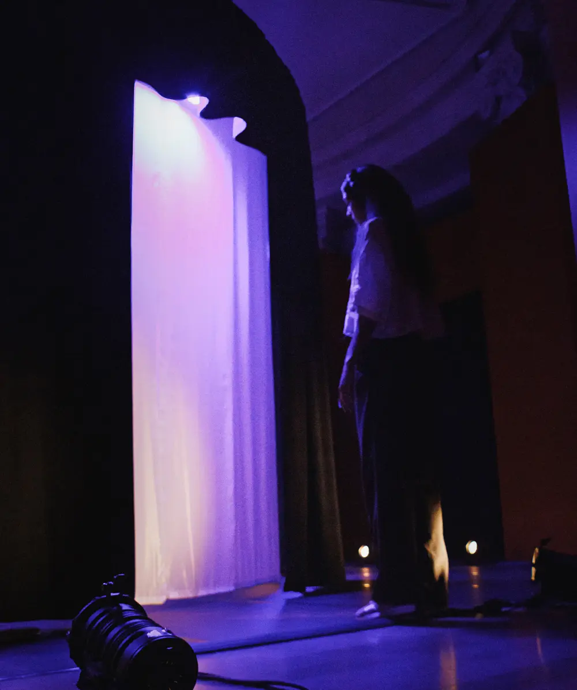

A quelques pas du monde
Performance collective & Son Immersif
Mon rôle : Sound Design, Composition musicale
Guidés par une voix et plongés dans une installation lumineuse qui évolue au rythme de la musique et des sons spatialisés, les spectateurs sont invités à glisser leurs pas dans ceux d'une danseuse étoile pour sa première représentation sur scène. L'expérience prend place au cœur du Palais Garnier, dans la rotonde entièrement réaménagée pour l'occasion. Ce projet est issu d'une collaboration entre l' l'Opéra de Paris et Tamanoir Immersive Studio.
Le sound design d'“A Quelques Pas du Monde” est le fruit d'une réflexion sur l'incarnation du mouvement par le son. L'objectif étant d'explorer la danse non comme une performance à exécuter, mais comme un langage sensible à ressentir.

Dans cette démarche, j'ai travaillé avec la violoncelliste Ariane Issartel sur une composition où sound design et mélodies se mélangent pour se déployer comme l'épanouissement d'un geste.
Crédits
- Écriture et mise en scène
- Sam Lecoeur
- Gestion de projet
- Manon Paret
- Production
- Rémi Large
- Scénographie et conception lumière
- Paolo Morvan
- Sound Design et composition musicale
- Jean Le Bellego
- Sound Designer Associé
- Anysé Amestoy
- Violoncelle
- Ariane Issartel
- Voix
- Claire Saumande, Catherine Lairaud